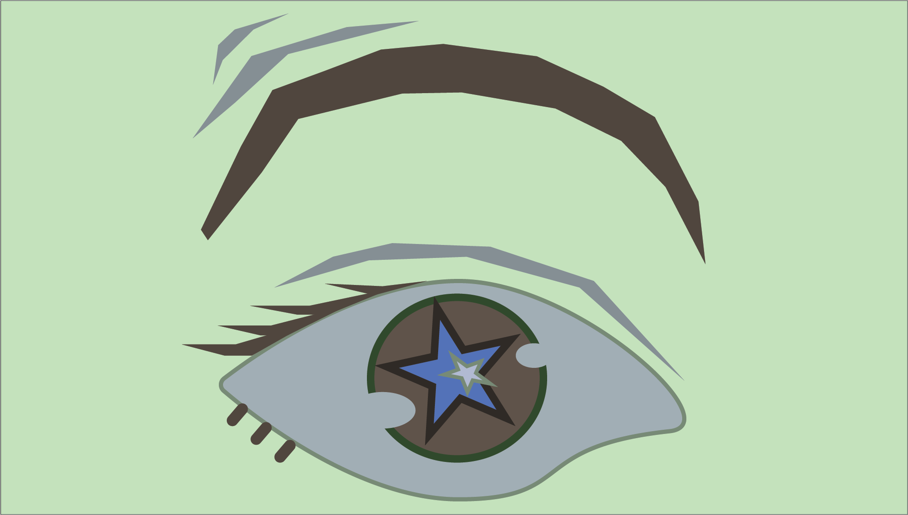
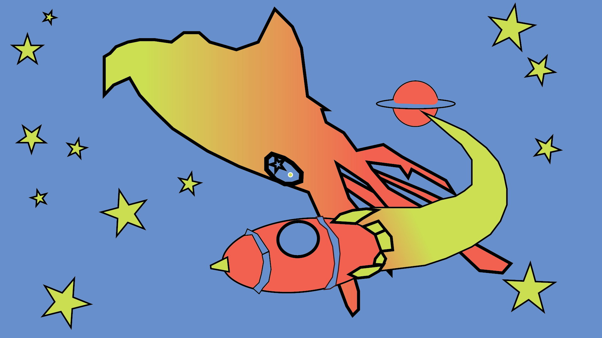
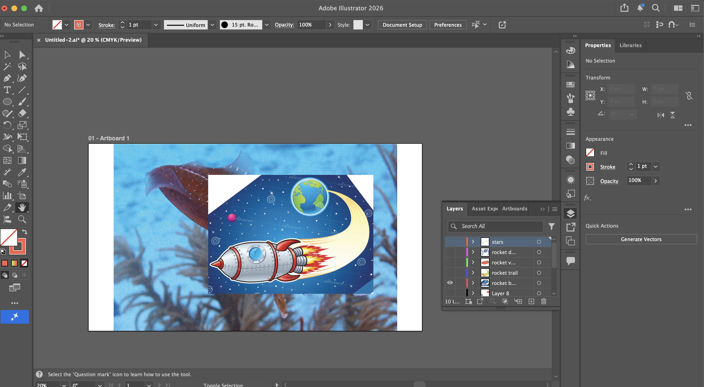

For this assignment, I struggled to find an image to edit that I thought was intriguing but also simple enough to render in a three color style. I decided to edit a photo of one of my favorite animals, the squid. I thought of something to create a dynamic interaction from the background to foreground, a rocket blasting off from a distant planet. Once the photo was imported, I struggled to erase parts of it to be able to view the squid at the same time, so that's what you see in my Adobe workspace, haha. For ease, I outlined the rocket first and then made it transparent to work on the squid before turning on all layers so I could work on the whole piece at once. I also skirted the three color rule slightly by applying a gradient to some of the colors for a little more visual interest. If I had access to more colors or time for the assignment, I would add a shadowy vignette around the border to draw attention to the center action, and maybe some hatching on the rocket trail or on the squid itself. Overall, I liked how this one came out.
